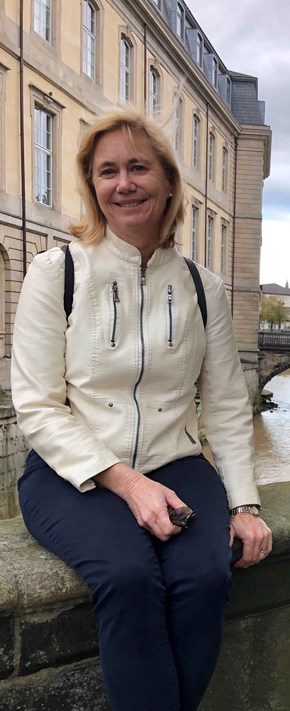

Karen Peel Professional Profile
 Dr Karen Peel is a Senior Lecturer in the School of Education at the University of Southern Queensland, Australia. Her research interests include the implementation of practices for effective teaching and self-regulated learning, classroom cultures that support positive behaviour, and contemporary issues in education that impact outcomes for students and educators.
Research Interests and Publications
Teacher Resilience
- Peel, K. L., Kelly, N., & Danaher, P. (2024). Australian teachers’ causal attributions along a motivational continuum in supporting their resilience. Issues in Educational Research, 34(1), 163-182. https://www.iier.org.au/iier.html
- Rojas, J. C., Barril, J. P., Jiménez, T. L., Clarà, M., Ramos, F. S., Peel, K., & Justiniano, B. (2024). Navigating burnout: a study of teacher identity in Chile, Ecuador, Brazil, Spain and Australia. Pedagogy, Culture & Society, 1-17. https://doi.org/10.1080/14681366.2024.2302314
- Peel, K. L., Kelly, N., Danaher, P. A., Harreveld, B., & Mulligan, D. (2023). Analysing teachers’ figurative language to shed new light on teacher resilience. Teaching and Teacher Education, 130, 104175. https://doi.org/10.1016/j.tate.2023.104175
Remote Education Tutors
- McLennan, B., Peel, K. L., Danaher, P. A., & Burnett, E. (2024). Learning at a distance: Recognising remote tutoring as a career. Distance Education. https://doi.org/10.1080/01587919.2024.2338718
- Peel, K. L., McLennan, B., Danaher, P. A., & Burnett, E. (2022). Occupational (In)visibility: The emerging role of the Remote Education Tutor as an educational conduit. The Australian Educational Researcher, 1-30. https://doi.org/10.1007/s13384-022-00576-7
- McLennan, B., Peel, K., Burnett, E., & Danaher, P. (2022). Australian remote education tutors and universities: Proposed innovative partnerships for credentialling adult supervisors of school students enrolled in distance education. Australian and International Journal of Rural Education, 32(1). https://journal.spera.asn.au/index.php/AIJRE/article/view/314?fbclid=IwAR039gzMnvoSji9n5ZZA_y3UoyaQx5XmTw4qXJGKIviiC2gwMCr9JH8JfOk
Teacher Professional Development
- Peel, K. L. (2021). Professional dialogue in researcher-teacher collaborations: exploring practices for effective student learning. Journal of Education for Teaching, 47(4) 1-19. https://doi.org/10.1080/02607476.2020.1855061
- Blackley, C., Redmond, P., & Peel, K. L. (2021). Teacher decision-making in the classroom: The influence of cognitive load and teacher affect. Journal of Education for Teaching, 47(4). https://doi.org/10.1080/02607476.2021.1902748
Qualitative Research Design
- Peel, K. L. (2020). A beginner’s guide to applied educational research using thematic analysis. Practical Assessment, Research & Evaluation, 25(2), 1-25. https://doi.org/10.7275/ryr5-k983
Self-regulated Learning
Education
- Doctor of Philosophy, University of Southern Queensland, 2017
- Master of Education – Curriculum and Pedagogy, University of Southern Queensland, 2009
- Bachelor of Education, Brisbane College of Advanced Education, 1988
- Diploma of Secondary Teaching - Physical Education and Geography, Brisbane College of Advanced Education, 1983